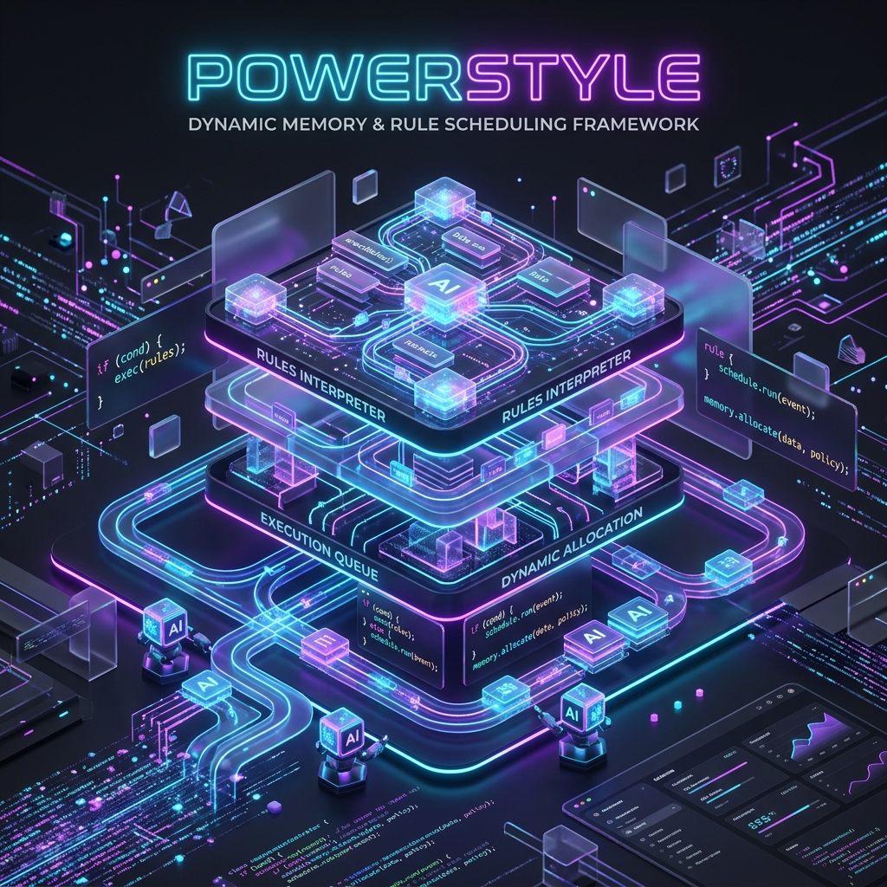

Dynamic Memory &
Rule Scheduling
The ultimate multi-tier generic framework for intelligent routing, context assembly, and state decay. Never let your LLM context window overflow again.

Why PowerStyle?
Built for agents, robust enough for any dynamic scheduling task.
Fluid Multi-Tiering
Items degrade over time based on configurable decay rates. Only active, heavily-used items maintain high strength, naturally keeping your primary context pristine.
Pluggable Assemblers
Map specific behaviors to each tier. Tier 1 gets Exact Match, Tier 2 runs Vector Semantic Search, and Tier 3 utilizes LLM Summarization.
Decoupled Resources
Bring your own Vector Database and LLM Provider. PowerStyle uses an abstract interface allowing hot-swapping between OpenAI, local models, SeekDB, or Chroma.
from power_style.core.memory_manager import MemoryManager
from power_style.core.assembler import global_assembler
# 1. Initialize with your config
manager = MemoryManager(default_config)
# 2. Process items (Automatic Decay & Tier Calculation)
items = manager.process_items(my_agent_tools)
# 3. Assemble Context
context = { "query": "extract data from pdf" }
assembled = global_assembler.assemble(items, context)
print(f"Tier 1 (Exact): {len(assembled[1])}")
print(f"Tier 2 (Vector): {len(assembled[2])}")
Elegant & Un-opinionated
PowerStyle doesn't care what your data is. Just inherit from MemoryItem, configure your decay rates, and let the MemoryManager and ItemAssembler handle the routing logic.
- ✓ Perfect for Chat History
- ✓ Excellent for Code Guidelines
- ✓ Dynamic Tool Loading
Infinite Extensibility
PowerStyle allows you to easily plug in your own custom algorithms to handle specialized processing per tier. We've added 22+ algorithms to the standard library!
- 🧠 Decay Managers: Linear, Ebbinghaus (Exponential), LRU, LFU, and Volatile.
- 🔍 Retrieval: ExactMatch, VectorSearch, KeywordMatch, JaccardSimilarity, RegexMatch.
- 📊 Sorting: TimeWeightSort, StrengthSort, RecencySort, LengthSort.
- ✂️ Truncation & Filters: LengthTruncate, MetadataFilter, Deduplication, CategoryGroup.
- ✨ Transformation: LLMSummary (Compression), RandomSample, Shuffle.
# Using advanced algorithms for Chat History
from power_style.plugins.algorithms import TimeWeightSortAlgorithm
# Register custom routing
global_assembler.register_algorithm(
"time_weight_sort",
TimeWeightSortAlgorithm()
)
# Assemble context for an LLM Agent
context = {
"query": "What did we discuss?",
"limit": 5 # Used by TimeWeightSort
}
# The assembler routes data to the best plugin
assembled = global_assembler.assemble(memories, context)
print("Tier 1 (Recency+Strength): ", len(assembled[1]))